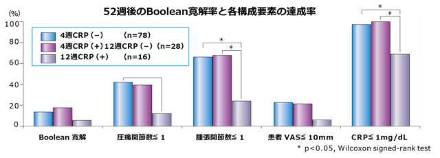

アクテムラ投与12週以内のCRP陰性化が、52週後の臨床治療成績と関係している（TBCR）
研究概要
| 目的 | 対象と方法 |
|---|---|
| アクテムラ投与中のCRP陰性化時期と52週後の臨床治療成績の関係を検討 | TBCR†においてアクテムラ治療を行った関節リウマチ患者122名をCRPの陰性化時期 別に3群に分け、52週後のBoolean寛解率とその各構成要素の達成率を比較した。 †TBCR：Tsurumai Biologics Communication Registry |

アクテムラ投与12週以内にCRPが陰性化している症例で有効性が高かった
⇒しっかり効かせるには早期CRP陰性化が重要